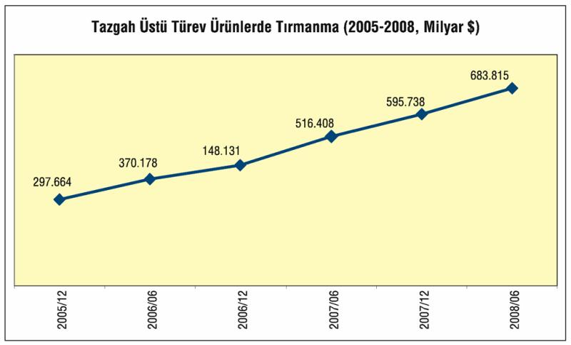

Kriz, her ne kadar başlangıçta bir ipotekli konut krizi olarak ortaya çıksa da, takip eden süreçte bir likidite krizine dönüştü, ardından da hızla reel sektöre sıçradı. Bu durum, çevre-"yükselen ekonomileri" daha da derinden etkiledi. 2002 sonrasında dünyada ikame edilen finansal mimari ve üretim paradigması bu sonucu hazırladı.
Reel üretimin çok üstünde değer atfedilerek piyasada takla attırılan kâğıtların yarattığı balonlar çok kısa sürede inanılmaz boyutlara ulaştı. Türev ürün denilen, kâğıttan kâğıt türeterek piyasada yatırım aracına dönüştürme işlemleri çok kısa sürede balonlaşmayı hızlandırdı. Tezgah üstü türev ürünler denilen bu kâğıtlar 2005 sonunda 300 trilyon doları bulmuşken 2008 sonunda 684 trilyon dolarlık bir değere kadar şişirildi.

Çevre ülkeler, büyümenin finansmanında ve ihracatta büyük oranda bağımlılık içindeler. Bir yanda borçlanmaları hızlandı, öte yanda tedarikçi bir üretim zinciri içerisindeki bağımlılıkları nedeniyle Türkiye gibi çevre ülkeler aşırı derecede etkilendi. Bu noktada, finansman kaynaklarının (sıcak para ağırlıkla) azalması çevre ekonomileri açısından ihracat piyasalarının daralmasına, üretim ve istihdam kayıplarına neden oldu. Burada dikkat çeken unsurlar kısaca şu şekilde özetlenebilir:
Türkiye işsizlik artışının yanı sıra, ihracat ve sanayi üretimindeki düşüş itibariyle, en çok etkilenen ülkelerin içinde yer aldı. Resmî verilere göre, işsizlik artışında G. Afrika, Polonya ve Türkiye ilk üçe girerken; Çin, ABD, Avro bölgesi tehlikeli alanda.
Krizin reel sektörü etkilemesi ile birlikte, otomotiv ve tekstil gibi ana sektörlerde daralmalar yaşandı. Krizin merkez üssü ABD'de General Motors, Ford, Chrysler gibi firmaların bilançolarında zarar açıklaması ve üretim üslerinde üretimlere ara vermesi, bünyesinde çalışanların işsiz kalmasına yol açtı.
Bu gelişmelerle birlikte, hem ABD'de hem de tüm dünyada işsizlik oranları yükseldi. Sanayi üretimindeki düşüşte gelişmiş ülkelerden Japonya ve G. Kore, çevre ekonomilerinden Brezilya, Çek Cumhuriyeti, Macaristan, Malezya, Polonya ve Türkiye başı çekti. İhracattaki erozyonda yine Japonya, G. Kore, Avro bölgesi, Brezilya, G. Afrika, Çek Cumhuriyeti, Polonya, Meksika ve Türkiye en çok etkilenen ülkeler arasında yer aldı.
Kriz sürecinde parasında en fazla devalüasyon yaşayan ülkeler arasında Polonya, Avustralya, Meksika, Brezilya, Rusya, Endonezya, Türkiye, Macaristan ve İngiltere yer aldı.
Başta ABD merkez bankası FED olmak üzere, merkez bankalarının batmakta olan finans kuruluşlarına, büyük şirketlere açtıkları krediler, kullandırdıkları bütçe kaynakları toplamda 10 trilyon doları geçti, sistem çökmesin diye faizler neredeyse "sıfır" düzeyine indirildi. Ancak, bu önlemler henüz krizden çıkışı sağlamış değil. FED'in 3-4 Kasım 2009'daki kurul toplantısının tutanaklarına göre, faizlerin sıfır düzeyine yakın tutulmasının finans piyasalarındaki spekülatif hareketler ve balonlara neden olabileceği uyarısı yapıldı. Eşikte her an yeni bir şok dalgasının uğultuları var ve bunu yadsımanın bir işe yaramayacağını anlamış görünüyorlar.